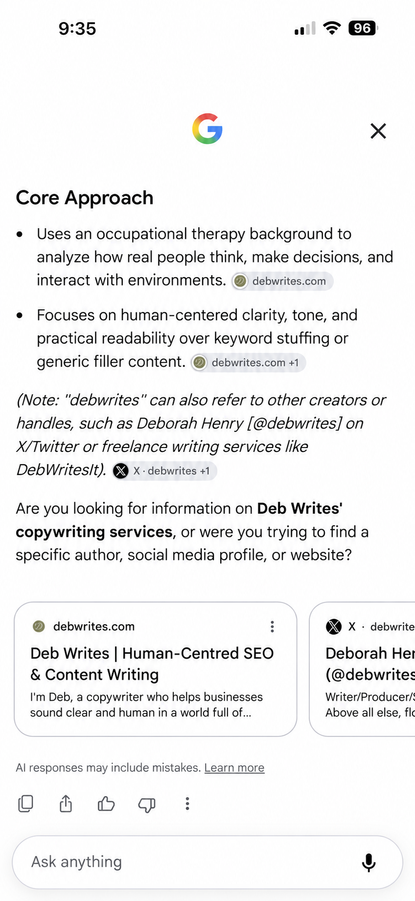
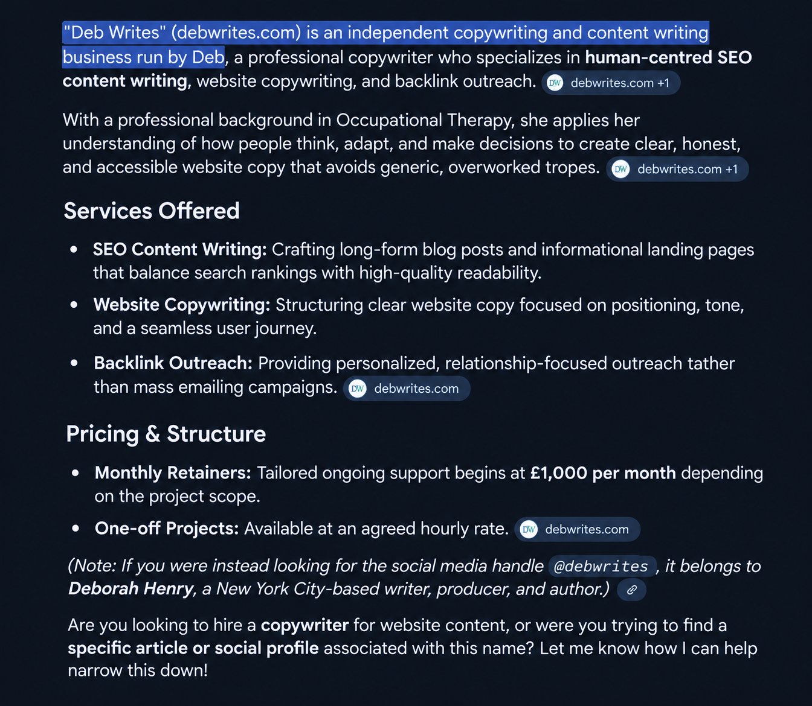

Earlier in the day, I checked what Google's AI search was saying about Deb Writes. The answer focused on my approach, including my background in Occupational Therapy and the importance I place on clear, human-centred content.

I also saw my FAQ appear in a result that morning. When I checked again later, I couldn't find it there.
By the evening, the AI answer looked different. It gave a fuller description of Deb Writes, including services and pricing. The result had changed within the same day.

What can we take from that?
It shows how much an AI-generated answer can vary between checks. It doesn't tell me exactly why it changed, or whether the same version will appear for someone else. A screenshot is a record of what appeared at that moment, not a guarantee of what Google will show next time.
It also doesn't mean traditional SEO has stopped mattering. Building search visibility often takes ongoing work. A changing AI answer isn't the same as a lasting improvement in search rankings.
What businesses can do
The practical step is to make your website clear and keep important information accurate. Explain what you do, who you help and what your services include. Make key details easy to find, and keep an eye on how your business appears in search.
If you check an AI result, note what you searched for and when you checked it. Results can change, so one check only gives you a snapshot.
Clear info still matters
Seeing the answer change so quickly caught my attention. It's a reminder that businesses may appear differently in AI search from one check to another. Clear, useful information on your own website still matters, whatever brings someone to it.